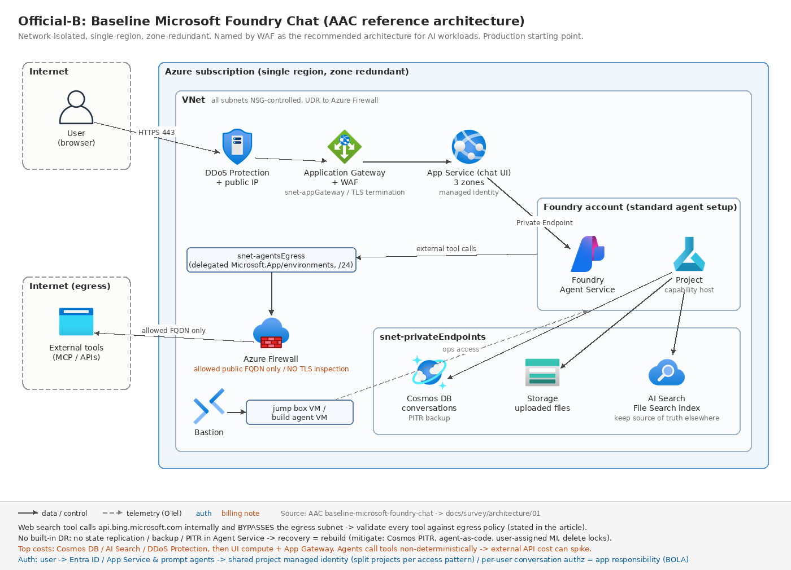

01. 公式ベストプラクティス(リファレンスアーキテクチャ / WAF / CAF)
最終更新: 2026-07-30(公式ドキュメントとの突合検証で訂正)
本ページは Microsoft が公式に出しているものだけを扱う。想定ユースケース別の設計(04〜08)は、ここを土台にした上での応用と位置づける。
公式ドキュメントの三層構造(まずここを理解する)
| 層 | 何の根拠になるか | 主な所在 |
|---|---|---|
| CAF(Cloud Adoption Framework) | 組織・ガバナンス・ランディングゾーン配置・リソース粒度 | /azure/cloud-adoption-framework/ai/ |
| WAF(Well-Architected Framework) | 非機能設計の原則(信頼性・セキュリティ・コスト・運用・性能) | /azure/well-architected/ai/ |
| AAC(Azure Architecture Center) | 実装トポロジー(どのサービスをどう並べるか) | /azure/architecture/ai-ml/ |
現行のドキュメント構造では AAC と WAF が実装ガイダンスの一次情報となっている(「明記」の一次ソースは未確認)。提案書では CAF = 組織・配置の根拠、AAC/WAF = 実装の根拠として使い分けるのが現行構造に整合する。
1. AAC リファレンスアーキテクチャ(実装トポロジーの正)
Foundry チャット系の「リファレンスアーキテクチャ」は 3 本しかない。それ以外は「ガイド」または「ソリューションアイデア」で、検証レベルが下がる(ソリューションアイデアは「設計の出発点として使え」と明記されている)。顧客提案で引用するときはこの区別を守る。
| # | 名称 | 変種 | URL |
|---|---|---|---|
| A | Basic Microsoft Foundry Chat | パブリック・単一リージョン・ゾーン冗長なし | basic-microsoft-foundry-chat |
| B | Baseline Microsoft Foundry Chat | ネットワーク分離・単一リージョン・ゾーン冗長 | baseline-microsoft-foundry-chat |
| C | Baseline Microsoft Foundry Chat in an Azure Landing Zone | ネットワーク分離・hub-spoke | baseline-microsoft-foundry-landing-zone |
URL 改称に注意: 旧
baseline-openai-e2e-chatはbaseline-microsoft-foundry-chatにリネームされた(リダイレクトは生存)。過去資料の URL をそのまま引用すると古い前提で読まれる。
A. Basic — PoC 専用。本番非推奨と記事自身が明言
構成: App Service(Basic tier、Easy Auth で Entra ID 認証)+ Foundry リソース/プロジェクト 1 個 + Prompt agent + Azure OpenAI(Global Standard、既定ガードレール DefaultV2)+ AI Search(Basic tier)+ Application Insights。
意図的に欠けているもの(記事が明示):
- ネットワークセキュリティが皆無。「identity as its perimeter」であり、AI Search / Foundry / App Service がインターネットから到達可能。
- egress 制御がない → 「グラウンディングデータの持ち出しをネットワーク統制では防げない」と明記。
- Agent Service は basic setup(Microsoft ホストの依存サービス)。Cosmos DB / Storage / AI Search が自サブスクリプションに見えず、信頼性特性を制御できない。
B. Baseline — 本番の出発点。WAF が「AI ワークロードの推奨アーキテクチャ」と名指し

Internet
│
▼
[Azure DDoS Protection] ── パブリック IP を保護
[Application Gateway + WAF] ← 唯一のインターネット公開リソース。TLS 終端
│ (snet-appGateway)
▼
[App Service (3ゾーン, マネージドID)] ← チャット UI
│ (snet-appServicePlan / NSG: inbound 全拒否)
│ Private Endpoint 経由
▼
[Foundry リソース + プロジェクト + Agent Service (standard setup)]
│
├─ [Cosmos DB for NoSQL] 会話履歴・エージェント定義 (enterprise_memory DB)
├─ [Azure Storage (Blob)] アップロードファイル
├─ [Azure AI Search] File Search のチャンク索引・静的ナレッジ
│ すべて Private Endpoint (snet-privateEndpoints)
│
└─ 外部ツール呼び出し (MCP / カスタム API)
│ snet-agentsEgress (Microsoft.App/environments へ委任, /24 推奨)
▼
[Azure Firewall] ── 許可した公開 FQDN のみ
│
▼ [Azure Bastion] → [jump box VM] → ポータル/データプレーンへ
Internet [build agent VM] → VNet 内 CI/CDサブネットと統制(記事の表):
| サブネット | NSG inbound | NSG outbound | Firewall への UDR | Firewall egress |
|---|---|---|---|---|
snet-privateEndpoints |
VNet | 全拒否 | Yes | 全拒否 |
snet-appGateway |
UI 利用者の送信元 IP + サービス必須 | PE サブネット + サービス必須 | No | — |
snet-appServicePlan |
全拒否 | PE + Azure Monitor | Yes | Azure Monitor 宛のみ |
snet-agentsEgress |
全拒否 | PE + インターネット | Yes | 許可した公開 FQDN のみ |
snet-jumpBoxes / snet-buildAgents |
Bastion サブネットのみ | PE + インターネット | Yes | VM の必要範囲 |
この記事から拾うべき「明示された地雷」(そのまま提案レビューのチェック項目になる):
- web search ツールは
api.bing.microsoft.comを内部機構で呼び、egress サブネットを完全にバイパスする。「443 を開ければ Firewall を通るはず」という前提が成り立たない。全ツールについて egress ポリシー適合を実測せよと書かれている。 - Azure Firewall の TLS インスペクションを適用してはならない。検査時に挿入される証明書がエージェントの接続を壊す。
AzureActiveDirectoryサービスタグの許可が必要。 - Private Endpoint + UDR を使うため、Foundry の Network Security Perimeter 機能は併用できない。
- WAF チューニングが実務上必須。チャット本文に含まれるコード片・SQL・HTML がマネージドルールの誤検知を誘発し、多ターン会話で OWASP anomaly score が累積して、ある時点で突然 HTTP 403 になる。チャット本文フィールドに限定した exclusion をルールグループ単位で設定し、リクエストボディ検査サイズ上限も確認する。
- 会話の per-user 認可を Foundry は行わない。クライアントから来た conversation ID をそのまま渡すと OWASP Broken Object Level Authorization 脆弱性になる。会話の所有権をリクエストごとに検証するのはアプリサーバーの責任。
- Foundry ポータルは従業員 ID ではなくサービス ID で多くの操作を行うため、限定的な RBAC しか持たない従業員が会話内容やエージェント定義を閲覧できてしまう。本番ではポータルアクセスを原則遮断し、IaC/パイプライン運用に寄せる。
- プロジェクト作成は特権操作として扱う。ポータルで作ったプロジェクトは Private Endpoint / NSG を継承せず、そこに作られたエージェントはセキュリティ境界を迂回する。
- 接続(Connections)はプロジェクトレベルでのみ作る。リソースレベル接続は現在と将来の全プロジェクトに波及し、最小権限に反する。
- 1 プロジェクト内の全 prompt agent は同一マネージド ID を共有する。アクセスパターンが違うならプロジェクトを分ける。hosted agent は個別の Entra Agent ID を持つのでこの制約を受けない。
DR に関する最重要の記述(そのまま顧客に開示すべき):
Foundry Agent Service には組み込みの DR 機能がない。状態のレプリケーション・バックアップ・ポイントインタイム復元のいずれも持たない。復旧はレプリカの昇格ではなく再構築で行う。インシデントによってエージェント・会話・ナレッジデータが恒久的に失われうる。
補償策として記事が挙げるのは、Cosmos DB の継続バックアップ(PITR)、AI Search は復元機能が無いため別途 source of truth を維持、Storage は GRS + customer-managed failover、エージェント定義を as code で管理(ポータルでの未追跡変更を避ける)、プロジェクトにユーザー割当マネージド ID を使う(誤削除時にロール割当を再利用できる)、依存 3 サービスに削除ロック。
コストについての記述: 最も高いのは Cosmos DB / AI Search / DDoS Protection、次いで UI コンピュートと Application Gateway。ファイルアップロードが不要なら Storage を LRS、AI Search をレプリカ 1 に落とせる。さらに「エージェントは非決定的にツールを呼ぶため、無関係なクエリでも外部 API を叩いてコストが跳ねる」「max_output_tokens / truncation によるトークン制御はセルフホストのオーケストレーションでしか実現できない」「予測可能なコストが必要ならセルフホストのオーケストレータを検討せよ」と明記されている。
実装: microsoft-foundry-baseline (Bicep、活発に更新中)
C. Baseline in Azure Landing Zone — hub-spoke 版。ただしコードは記事から消えた
冒頭で明示的に否定されているトポロジー(SI 判断で最重要):
ランディングゾーン実装では「Foundry リソースをビジネスグループ単位の中央リソースとし、プロジェクトをワークロードごとの委譲単位にする」構成が考えられるが、リソース組織上の要因とコスト配賦の限界により、このトポロジーは推奨しない。代わりに本アーキテクチャはワークロードを Foundry リソースの所有者として扱う。
所有権の分界:
| プラットフォームチーム | ワークロードチーム |
|---|---|
| Azure Firewall(hub)、Azure Bastion、spoke VNet 本体とピアリング・DNS、UDR、Azure Private DNS ゾーン、DNS Private Resolver、DDoS Protection、Azure Policy | Foundry リソース + プロジェクト + Agent Service、Cosmos DB / Storage / AI Search(エージェント専用、他ワークロードと共有禁止)、App Service、Application Gateway + WAF とそのパブリック IP(spoke 側)、Key Vault、監視、spoke のサブネットと NSG、Private Endpoint |
明示的な警告: 「Foundry の依存リソースをプラットフォームリソースに集約してコストを最適化しようとするな。これらはワークロードリソースのままでなければならない。」
サブスクリプション vending でプラットフォームチームに出す要件:
| 項目 | 要求値 |
|---|---|
| spoke VNet | 単一専用 spoke、/22 の連続アドレス空間(side-by-side デプロイに対応するため) |
| アドレス範囲 | Agent Service は RFC1918 のみ。agent サブネットは /24 プレフィックス内 |
| リージョン | hub をワークロードと同一リージョンに。AZ 対応必須 |
| Private Endpoint | AI Search / Cosmos DB / Key Vault / Foundry / Storage |
| ingress | データサイエンティストが社内網から Foundry ポータルへ、運用者が jump box 経由 |
egress を hub Firewall に強制できないコンポーネントがある:
| コンポーネント | 強制手段 |
|---|---|
| Application Gateway | なし(強制不可) |
| AI Search | なし(強制不可) |
| App Service | Regional VNet integration + vnetRouteAllEnabled |
| Agent Service | snet-agentsEgress の UDR |
強制できない部分は「補償統制」「機能除外による再設計」「正式な例外申請」のいずれかで組織要件に整合させる。
DNS の落とし穴(デプロイ失敗の直接原因になる):
Agent Service は spoke VNet の DNS 構成を使わない。プラットフォームチームが DNS Private Resolver にワークロードのプライベート DNS ゾーン用ルールセットを構成し、spoke にリンクすることを推奨する。プライベート DNS レコードがサブネット内から解決可能になる前に Agent Service をデプロイしようとすると、デプロイは失敗する。
DNS を VNet から継承するのは Application Gateway / App Service / jump box / build agent のみ。AI Search / Foundry / Agent Service / Cosmos DB は上書き不可で Azure DNS を使う。
既存 ALZ ポリシーとの衝突例(記事が挙げる 3 つ): Key Vault シークレットの最大有効期間ポリシー(Foundry が保存する接続シークレットに有効期限が付かない)、AI Search の CMK 必須ポリシー、「Foundry models should not be preview」(開発時にプレビューモデルを使い本番までに GA する想定と衝突)。
⚠ リファレンス実装が削除されている。 この記事には GitHub リンクが 1 つも無く、2026-07-01 のコミットで「Remove reference to implementation」が入っている。旧リポジトリ(
azure-openai-chat-baseline-landing-zone等)は 404。ALZ 配下の案件では、この記事は設計ガイドとしてのみ使い、コードは後述の AI-Landing-Zones / AVM を見る。
2. AAC のガイド類(リファレンスアーキテクチャではないが判断材料として重要)
2.1 AI Agent Orchestration Patterns — マルチエージェント判断の一次資料
まず複雑度の段階を選ぶ:
| レベル | 使う条件 |
|---|---|
| Direct model call | 分類・要約・翻訳などの単発タスク。「プロンプトエンジニアリングで解けるならエージェントは要らない」 |
| Single agent with tools | 「エンタープライズユースケースではしばしばこれが正しい既定」と明記。無限ループ防止に iteration limit を設定 |
| Multiagent orchestration | 部門横断、エージェントごとに異なるセキュリティ境界が必要、並列特化が有利な場合 |
5 パターンの比較:
| パターン | ルーティング | 適する対象 | 注意点 |
|---|---|---|---|
| Sequential | 決定的・事前定義順 | 段階的な品質向上、明確な依存関係 | 前段の失敗が伝播、並列性なし |
| Concurrent | 決定的 or 動的選択 | 複数視点の独立分析、レイテンシ重視 | 結果矛盾時の解決が必要、リソース消費大 |
| Group chat | chat manager がターン制御 | 合意形成、maker-checker 検証 | 会話ループ、多数エージェントで制御困難 |
| Handoff | エージェントが移譲を判断 | 適切な専門家が処理中に判明する場合 | 無限 handoff ループ、経路が予測不能 |
| Magentic | manager が task ledger を動的に構築 | 解法が事前に定まらない open-ended 問題 | 収束が遅い、曖昧なゴールで停滞 |
実装手段との対応:
- Microsoft Agent Framework — 5 パターンすべてを workflow orchestration として組み込みサポート。HITL 対応。
- Foundry Agent Service — 「マネージドでノーコードなエージェント連鎖を connected agents 機能で提供する。このサービスのワークフローは主に非決定的で、完全に実装できるパターンの範囲が限られる。マネージド環境が必要で、オーケストレーション要件が単純な場合に使え」。
- LangChain / CrewAI / OpenAI Agents SDK も名指しで併記され、「本記事のオーケストレーションパターンは Microsoft SDK 固有ではない。どの SDK を選んでも設計ガイダンスは適用できる」と中立を明示している。
セキュリティ上の必須事項: 「エージェントは全ユーザーの要求を扱うためナレッジストアへの広いアクセスを持たざるを得ないが、ユーザーがアクセスできないデータを返してはならない。セキュリティトリミングはパターン内のすべてのエージェントで実装しなければならない。」
2.2 ゲートウェイ(APIM)を挟むかどうか
URL: azure-openai-gateway-guide
重要な留保: 「大半のワークロードは、この問題(スロットリング)を Global および Data Zone デプロイで解決すべきである。Global / Data Zone デプロイ自体がゲートウェイ実装である。」→ スロットリング対策だけが目的ならカスタムゲートウェイは不要。
「入れるな」と明記されている 3 条件:
- ワークロードが合意済み SLO を満たせなくなるなら導入するな
- ワークロード自身または利用者データの機密性・完全性・可用性を守れなくなるなら導入するな
- 交渉済みの性能目標が達成不能になる、あるいは他のトレードオフが多すぎるなら導入するな
見落としやすい制約: ストリーミング応答には長時間接続の維持が要り、Responses API のようなステートフルな対話にはセッションアフィニティが必要。また Foundry のデータプレーン認証はリソースまたはプロジェクト単位で行われ、個別モデルデプロイ単位ではないため、デプロイ単位の最小権限や ID スコープ分離が複雑になる。
2.3 Agentic RAG を使うかどうか
URL: rag-agentic
標準 RAG は固定パイプライン(検索するか / どのインデックスか / 何回検索するかを設計時に決定)。Agentic RAG は検索をツールとして扱い、エージェントが推論ループで反復する。
明示された定量トレードオフ: 「標準 RAG のリクエストは 1 回の検索と 1 回の生成で 2〜3 秒。3〜5 回のツール呼び出しを伴う agentic RAG のリクエストは 8〜15 秒。」
ツール数の指針: 複数の retrieval ツールを持たせる場合、合計ツール数は 20 未満に保つ(モデルの選択精度維持のため)。反復上限は 5〜10 回が典型。
3. WAF(Well-Architected Framework)— AI ワークロード
入口: get-started
3.1 まず知っておくべき「無いもの」
- Foundry の WAF service guide は存在しない。
service-guides/azure-ai-foundryもservice-guides/microsoft-foundryも 404。Azure OpenAI の service guide は現在は廃止されリダイレクトされる(廃止時期・理由の公式明記は未確認)。 - ピラー別の AI ページも存在しない(
ai/reliabilityai/security等はすべて 404)。5 本柱はai/design-principlesの 1 ページに集約されている。 - したがって「Foundry を WAF 準拠で設計する根拠」を service guide に求めることは現状できない。代替の一次資料は、WAF の
ai/architecture-patternが「これらの baseline の例が AI ワークロードの推奨アーキテクチャである」として指す Baseline Microsoft Foundry chat(前節 B)。
3.2 Foundry か Azure ML か — WAF 空間で唯一の明示的な棲み分け
Azure Machine Learning の service guide にある注記:
生成 AI アプリケーションと AI エージェントには Microsoft Foundry を推奨の開発プラットフォームとして検討せよ。Azure Machine Learning は、従来型の機械学習ワークロード、エンドツーエンドの MLOps パイプライン、カスタムモデル訓練、高度なデータ準備・特徴量エンジニアリングを要するシナリオのための包括的プラットフォームであり続ける。
3.3 Application Design の推奨(技術選定に直結)
URL: application-design
5 レイヤー: Client(薄く保つ)/ Intelligence(ルーティング・オーケストレーション・エージェント)/ Inferencing / Knowledge(ここでデータアクセスポリシーと認可を強制する)/ Tools。
最重要の警告:
タスクとモデル呼び出しの間に自動的にエージェントを挟むな。提供したいインテリジェンスがエージェントパターンの複雑さを本当に必要とするのか、直接のモデル呼び出しで十分なのかを評価せよ。エージェント層はレイテンシを増やし、攻撃面を広げ、テストを複雑にする。
オーケストレータ vs エージェント協調:
| オーケストレータを使う | エージェント協調を使う |
|---|---|
| 予測可能なワークフロー / コンプライアンス上、特定ステップの実行保証が必要 / レイテンシとリソースの厳密制御 / 単純なタスク委譲 | 多段推論 / 複数専門ツールの協調 / 中間結果に応じた適応的挙動 / 会話状態とユーザーコンテキストの維持 |
トレードオフ: 「オーケストレーションは予測可能性と制御をもたらすが適応性を制限する。エージェント協調は動的な問題解決を可能にするが、ばらつきと複雑さを持ち込む。」
その他の明示的推奨: 「セキュリティと安全性の統制は検証されなければならず、マネージドサービスだから備わっていると仮定してはならない」/ データストアへの直接アクセス禁止(必ず認可を強制する API 抽象を経由)/ モデルとツールを抽象化 / prebuilt(SaaS/PaaS)を優先。
プロトコルへの警告: 「独自形式よりオープンで文書化されたインターフェースを選べ。業界には新興プロトコルが多数ある。急速に進化中あるいは廃止されつつあるプロトコルから来る技術的負債を考慮せよ。」標準指定はツール定義 = OpenAPI、モデル可搬性 = ONNX、テレメトリ = OpenTelemetry。
モデルルーターの非採用条件: 「狭い SLO を持つファインチューン済みモデルを使う場合、あるいは一貫した性能を含む決定的な挙動が重要な場合はモデルルーターを使うな。」
キャッシュのリスク: キャッシュキーに tenant/user identity、policy context、model version、prompt version を含めよ。「多くの状況で単一ユーザー向けのキャッシュはするな。」
3.4 5 本柱の設計原則から拾うべき点
- 信頼性: 推論 API に高可用性が要るなら、ホスティングプラットフォームが可用性ゾーンまたはマルチリージョン設計をサポートしなければならない。
- セキュリティ: 全推論エンドポイントに認証必須、匿名エンドポイント禁止。トレードオフとして「最高レベルのセキュリティを実装すると、暗号化データの分析・検査・ログ取得が制限されるため、コストと精度でトレードオフが生じる」と明記。
- コスト: オーケストレーションツールは always-on なので elastic compute を優先。「フルタイム稼働にサーバーレスコンピュートを避けよ。コストが跳ね上がりうる。」GPU は AI 機能にのみ使う。Azure OpenAI の負荷試験は課金されるため、未使用 PTU をテスト環境で使うかエンドポイントをシミュレートせよ。
- 運用: 「設計を単純化し、ワークフローのオーケストレーションを自動化し、day-2 運用を容易にするため、セルフホストより PaaS を優先せよ。」
- 性能: モデルの訓練・ファインチューニングには GPU 最適化コンピュートが必要になることが多いが、オーケストレーションツールには汎用 SKU で十分。
3.5 Architecture pattern(2026-05 新設、最新ページ)
URL: architecture-pattern
- レイヤーごとに変化速度が違う: Intelligence API は安定のためゆっくり進化、オーケストレーションとエージェント層はより速く進化、推論層は新モデル投入時に更新、ナレッジ層は継続的に進化。デプロイの調整を意図的に設計せよ。
- Tools layer が最高リスク: 「アクションは実世界に、場合によっては不可逆な結果をもたらす。高リスク操作には人間の承認ステップを追加せよ。統合前にすべてのツールを評価し、ガバナンスをワークロード境界の外まで拡張せよ。」
3.6 WAF 側の陳腐化(引用時の注意)
| ページ | 問題 |
|---|---|
ai/application-platform(2024-11) |
オーケストレーション節が「prompt flow のような既製ソリューションを優先せよ」のまま。prompt flow は 2027-04-20 廃止決定済みで、2026-04 更新の ai/application-design と矛盾する。この節は引用しないほうが安全 |
ai/mlops-genaiops(2024-11) |
同様に GenAIOps ツールとして prompt flow を推奨 |
ai/design-principles(2024-04) |
5 本柱の唯一のページだが agentic な内容がほぼない |
ai/architecture-pattern 内リンク |
baseline 記事へのリンクが旧名 URL のまま(リブランドが全ページに未反映) |
4. CAF(Cloud Adoption Framework)— 組織・配置・リソース粒度
入口: learn.microsoft.com/en-us/azure/cloud-adoption-framework/ai
構成は Strategy → Plan → Ready → Govern → Secure → Manage の 6 ステージ。別体系として Agent adoption(/cloud-adoption-framework/ai-agents/)が 2025-12 に新設された。
4.1 4 つの採用モデル(技術選定の最上位軸)
| モデル | トレードオフ(原文の趣旨) |
|---|---|
| Ready-to-use Copilots(SaaS) | 最速だがカスタマイズ性が最小 |
| Low-code SaaS 開発(Copilot Studio / M365 Copilot 拡張) | 業務部門に開発を開放できるが、重いカスタマイズは限界に達しマネージドプラットフォームへの移行が必要になる |
| Managed PaaS(Foundry / Agent Service / Azure ML) | SaaS より制御が効くが、SaaS では不要なエンジニアリング能力を要求する |
| Azure インフラ(VM / AKS / ACA) | 最大の制御だが運用オーナーシップ最大 |
CAF 全体を通じて LangGraph・CrewAI 等サードパーティオーケストレータへの言及はゼロ。オーケストレータの選択肢として名前が出るのは Foundry Agent Service と Microsoft Agent Framework のみ。AAC の orchestration patterns 記事だけが中立に併記している。この非対称性が実質的な選定コスト(ランディングゾーン統合・ポリシー・監視の既製品が無い)になる。
4.2 「AI 専用ランディングゾーンは必要か」— 公式回答は NO
よくある質問は「Azure ランディングゾーンとは別に専用の AI ランディングゾーンが必要か」だ。答えは「別の AI ランディングゾーンは必要ない」。既存の Azure ランディングゾーンアーキテクチャを使って、AI ワークロードをアプリケーションランディングゾーンにデプロイする。Azure ランディングゾーンの観点では、AI は単に別のワークロードまたはサービスにすぎない。
learn.microsoft.com 上に「AI landing zone accelerator」「Azure OpenAI landing zone accelerator」といった名称の CAF ページは存在しない。
4.3 AI Platform Sharing Decision Guidance — Foundry リソース粒度の一次資料
URL: ai-platform-sharing-isolation-colocation
前提定義: 「AI プラットフォームインスタンスがネットワーク境界・ID 境界・クォータ境界を定義する。」
① 共有境界モデル(Business unit / Data domain / Product owner のどれかを全社で選ぶ)。「どのモデルが普遍的に正しいということはない。どれを選ぶかより一貫性のほうが重要。」
② 本番の既定 = ワークロードごとに 1 インスタンス
複数の本番ワークロードを同一の Microsoft Foundry リソースに同居させるな(文書化された例外がない限り)。AI プラットフォームの共有は既定の慣行ではなく例外として扱え。
トレードオフ: 分離はコストと管理オーバーヘッドを増やす。各プラットフォームインスタンスがネットワーク・ID・監視・運用の運用オーバーヘッドを個別に抱える。
③ 本番で同居させる例外条件(5 つすべて充足が必要)
- 全ワークロードが同一の規制スコープ・データ分類・レジデンシー要件・データ取扱標準
- 同一ネットワーク境界・同一 DNS 名前空間・同一 ID 境界
- 共有障害リスクと共有クォータ枯渇リスクを受容
- 分離のコスト / 運用オーバーヘッドが便益を実質的に上回る。コスト圧力だけでは正当化として不十分
- 後からの分割が高コストであることを受容(AI プラットフォームの状態はインスタンス間できれいに移らず、再作成や再構成を要することが多い)
④ インスタンス内のセグメンテーション = プロジェクト。分離・同居いずれでも、Foundry ではユースケースごとに 1 プロジェクトを切る。
⑤ 非本番は既定が逆転。 dev/test/stage は環境ティアごとに共有インスタンスが既定。ただしトレードオフとして「他チームの実験からの干渉に全ワークロードが晒される。設定を誤ったファインチューニングジョブや暴走した評価実行が共有クォータを食い潰し他チームを遅くする。共有インスタンスで取ったテスト結果が本番挙動を予測できるとは限らない」と明記。
4.4 CAF と AAC の緊張(アーキテクトが解決すべき点)
| 論点 | CAF(AI Platform Sharing) | AAC(Baseline in ALZ) |
|---|---|---|
| 本番の既定 | ワークロードごとに専用インスタンス | ワークロードが Foundry リソースを所有 |
| 複数ワークロードでの Foundry リソース共有 | 文書化された例外として許可(5 条件) | 非推奨(コスト配賦・リソース組織の限界) |
| 非本番 | 環境ティアごとに共有が既定 | 言及なし |
両者は「本番はワークロード所有が既定」で一致する。食い違うのは「ビジネスグループ単位の中央 Foundry リソース + ワークロード = プロジェクト」というパターンの扱い。決定打は AAC が挙げた否定理由(コスト配賦) — Foundry リソース単位でしかコストを分離できないため、プロジェクト単位のチャージバックが成立しない。
中央集約したい顧客への公式代替: 「組織の AI Center of Excellence がモデルデプロイへのアクセスを制限する場合、AI hub のような中央集約リソースが必要になることがある。このシナリオでは、通常すべてのモデル消費が AI プラットフォームチームが提供する AI ゲートウェイを通る。」→ 「Foundry リソースを共有する」のではなく「プラットフォーム側に APIM を AI ゲートウェイとして置きモデル消費を通す」のが公式の推奨形。
4.5 Govern / Secure / Manage の実務的な要点
- Govern: NIST AI RMF 準拠。高リスク AI ワークロードは四半期ごと、低リスクは年次でリスク評価。独立レビュー(外部監査人または非関与の内部レビュアー)。
- Platform Governance: ALZ の「Workload Specific Compliance」policy initiative を名指し(
Enforce-Guardrails-MachineLearning/Enforce-Guardrails-CognitiveServices/Enforce-Guardrails-BotService)。Microsoft Entra Agent ID で Foundry と Copilot Studio が作った AI エージェントのインベントリを一元管理。非本番の自動シャットダウンをポリシーで強制。 - Secure: 既存の STRIDE から開始し、MITRE ATLAS と OWASP Generative AI risk を補完として参照(置換ではないと明記)。Purview Insider Risk Management でプロンプト経由のデータ持ち出しを検出。エージェントがコード実行する場合は Container Apps の Dynamic Sessions。
- Manage: Foundry Control Plane で AI エージェント fleet を集中管理。四半期ごとの DR テスト。Foundry ポータルで全デプロイのモデル引退日を確認。
- AI CoE: 既に CCoE があるならそこに統合せよ。独立 AI チームは既存チームが支えられない場合や重大リスクがある場合にのみ。初期は中央集権 → 成熟に伴いアドバイザリ型へ移行し AI デリバリをプラットフォームチームへ移管。
5. Foundry 製品側の公式アーキテクチャ概念ページ
5.1 Foundry architecture
URL: architecture
- 階層は Foundry リソース(ガバナンス境界: ネットワーク・セキュリティ・モデルデプロイ)→ プロジェクト(開発境界)→ プロジェクトアセット。接続先リソース(Storage / Key Vault / AI Search)は独立した Azure リソースで独自のガバナンス境界を持つ。
- Azure OpenAI と同一のプロバイダー名前空間を共有するため、「Azure OpenAI から Foundry にアップグレードしても、既存のカスタム Azure Policy と RBAC アクションはそのまま効く」。
- API スコープの罠: Azure OpenAI / Speech / Vision / Language でアカウントレベルにあった一部機能は「Foundry リソースレベルでのみ利用可能で、プロジェクトスコープでは使えない」(例: Translator API)。
- マルチリージョン: 「Foundry はリージョン間の自動フェイルオーバーをサポートしない。マルチリージョン可用性が必要なら、対象リージョンごとに別々の Foundry リソースをデプロイし、データ同期とルーティングをアプリケーション層で管理せよ。」
5.2 Rollout planning — トポロジー決定表
URL: planning
| 決定パス | 推奨構成 | 最適な場面 | 主なトレードオフ |
|---|---|---|---|
| Co-located workloads | 1 Foundry リソース + 複数プロジェクト | 実験中心、初期プロトタイプ、共有デプロイ・共有データの恩恵を受けるチーム | 本番インシデント・クォータ枯渇・設定ミスの blast radius を共有 |
| Fully isolated workloads | 本番ワークロード境界ごとに 1 Foundry リソース | 厳格な運用封じ込め、独立したアクセス制御・クォータ・コスト境界 | セルフサービス化が難しくなり、管理対象リソース増とセットアップ負荷増 |
本番では分離を既定として扱え。同居は、ワークロード境界・データ要件・リスク受容が揃っている場合の意図的な例外としてのみ使え。
能力別のトポロジー制約(見落とすと設計をやり直す):
| 能力領域 | プロジェクト単位で整理 | プロジェクトレベル RBAC 分離 | 計画上の含意 |
|---|---|---|---|
| Agent 系(agents / responses / evaluations / datasets / files) | Yes | Yes | 「ユースケースごとにプロジェクト」に適合 |
| Fine-tune training | No(既定プロジェクトのみ) | No | チームごとに独立してファインチューニングするなら Foundry リソースを分けるしかない |
| OpenAI image / video / batch | No | No | 分離ワークロード構成を使う |
| Content Understanding | Yes | No | 厳格なユースケース単位のアクセス分離が要るならリソースを分ける |
| Translator | No | No | 分離が必須ならリソースを分ける |
RBAC の落とし穴: 「Owner や Contributor のような管理ロールはすべての開発シナリオに十分ではない。例えばリソースは管理できてもエージェントとチャットするにはデータプレーンのロールが要る。」
6. アクセラレータ / リファレンス実装 / AVM の現況
| 用途 | 使うもの | 状態 |
|---|---|---|
| Basic 実装 | Azure-Samples/microsoft-foundry-basic |
稼働中(旧 openai-end-to-end-basic からリネーム) |
| Baseline 実装 | Azure-Samples/microsoft-foundry-baseline |
稼働中・活発(旧 openai-end-to-end-baseline) |
| ALZ 版実装 | — | 削除済み・後継なし |
| Foundry 公式サンプル | microsoft-foundry/foundry-samples |
極めて活発。infrastructure/infrastructure-setup-bicep/ に番号付きシナリオ(private network / CMK / RBAC / APIM 併用 / 評価専用など) |
| AI ランディングゾーン | Azure/AI-Landing-Zones |
Preview。Bicep / Terraform / ポータルの 3 系統、AVM ベース。standalone と hub-integrated の切替あり。「最新機能を提供するためプレビューのサービスを利用することがある」と明記 |
| IaC モジュール(Bicep) | avm/ptn/ai-ml/ai-foundry |
Available |
| IaC モジュール(Terraform) | avm-ptn-aiml-ai-foundry / avm-ptn-aiml-landing-zone |
ともに Available(LZ モジュールは Terraform のみ。Bicep 側は Proposed のまま) |
| LangChain / LangGraph 併用 | Azure-Samples/foundry-hosted-langchain-demos ほか |
公式サンプルとして存在 |
使うべきでないもの: Azure/azure-openai-landing-zone(2024-10 以降更新なし、Foundry 改称未反映)、Azure-Samples/ai-landing-zone-in-a-box(アーカイブ済み)。なお「AI Foundry Jumpstart」という独立プロダクトは存在しない(Arc Jumpstart は Arc / エッジ / K8s が主題の別物)。
主なソリューションアクセラレータ: Conversation Knowledge Mining / Document Knowledge Mining / Content Processing / Multi-Agent Custom Automation Engine (MACAE、AutoGen → Microsoft Agent Framework + Foundry に移行済み) / Modernize Your Code / Chat with your data。org はアクセラレータごとに異なる点に注意(MACAE は microsoft org: Multi-Agent-Custom-Automation-Engine-Solution-Accelerator 。Azure-Samples 側の同名 URL は 404)。RAG デモの事実上の最有力リファレンスは Azure-Samples/azure-search-openai-demo(こちらは Azure-Samples org で正しい)。
7. 日本の案件で特に効く公式事実
| 論点 | 事実 |
|---|---|
| APAC データゾーンが存在する | Data Zone デプロイの処理範囲は US / EU / APAC の 3 つ。APAC はオーストラリア・日本・韓国・シンガポール・インドを含む |
| ⚠ 公式ドキュメント間の不整合 | foundry/concepts/architecture は「data zone は US または EU 内に留まる」と書いており APAC に触れていない。deployment-types 側(US/EU/APAC を明記)が正 |
| 「国内処理」の唯一の解 | APAC Data Zone は日本以外も含むため「日本国内処理」にはならない。国内限定が要件なら Standard(リージョナル)または ProvisionedManaged 一択で、その代償としてモデル可用性・クォータ・レイテンシ安定性が劣後する |
| Japan East は Agent Service フル対応 | Responses API / Agents / Class A プライベート IP(10.x)対応すべて Yes。ツールも Computer Use 以外すべて Yes |
| Japan West は制約あり | Agents は使えるが Class A プライベート IP 範囲が非対応。国内 DR で West を使うなら委任サブネットは 172.16-31.x か 192.168.x を割り当てる |
| ネットワーク分離時のリージョン制約 | Foundry リソースは VNet と同一リージョン必須。Cosmos DB / AI Search / Storage は別リージョン可だがクロスリージョン帯域コストがかかる |
| 評価の日本リージョン非対応 | リスク・安全性評価器と AI Red Teaming は日本リージョンで実行できない(East US 2 / Sweden Central / Australia East 等)。本番推論は Japan East、評価は別リージョンのプロジェクトという分離設計になり、プロンプト・応答が評価のために国外に渡る点の法務確認が要る |
8. どの公式資料を出発点にするか(決定表)
| 顧客状況 | 使うもの | 根拠 |
|---|---|---|
| PoC・学習 | Basic Foundry chat + microsoft-foundry-basic |
記事自身が本番非推奨と明言 |
| 本番、ALZ なし、ネットワーク分離必須 | Baseline Foundry chat + microsoft-foundry-baseline |
WAF が「推奨アーキテクチャ」と名指し |
| 本番、ALZ あり(hub-spoke) | Baseline in ALZ を設計ガイドとして読み、コードは Azure/AI-Landing-Zones(Preview)または AVM avm-ptn-aiml-landing-zone(Terraform) |
記事から実装リンクが削除済み |
| 自社 IaC に組み込む | AVM avm/ptn/ai-ml/ai-foundry(Bicep)/ avm-ptn-aiml-ai-foundry(Terraform) |
ともに Available |
| マルチエージェントで決定的制御が必要 | Agent Framework + Container Apps、または hosted agent | AAC のソリューションアイデアと baseline の Alternatives |
| エージェントが数十〜数百 | Dynamic AI Agents at Scale(AKS + セマンティックキャッシュ) | 「エージェントが 5 未満なら使うな」と明記(要確認: 記事 URL 未特定。learn 検索でもヒットせず) |